iPhone6、iPad Pro惯性传感器性能对比
参数
| 机型 | iPhone6 | iPad Pro |
|---|---|---|
| 上市时间 | 2014.9 | 2015.9 |
| 操作系统 | iOS 11.0 beta2 | iOS 11.0 beta2 |
| CPU型号 | A8 | A9X |
| IMU型号 | InvenSense MP67B | InvenSense MP67B |
标定
误差来源
参考文档: An introduction to inertial navigation
加速计
| 误差类型 | 描述 |
|---|---|
| Bias,零偏 | 输出信号与真值间的偏移量，单位$m/s^2$ |
| Noise,白噪声 | 环境中的噪声影响，一般是零均值的随机误差，单位 $m/s/\sqrt{h}$ |
| Temperature Effects,温度影响 | 由于温度变化对系统性能产生的影响，高度非线性，一般由厂商在硬件内部进行修正 |
| Calibration, 标定误差 | 尺度因子误差，坐标轴非正交，未对齐和加速计输出的非线性误差 |
| Bias Instability,零偏扰动 | 加速计零偏的随机游走 |
陀螺仪
| 误差类型 | 描述 |
|---|---|
| Bias,零偏 | 输出信号与真值间的偏移量，单位$°/h$ |
| Noise,白噪声 | 环境中的噪声影响，一般认为是零均值的随机误差，单位$°/ \sqrt{h}$ |
| Temperature Effects,温度影响 | 由于温度变化对系统性能产生的影响，高度非线性，一般由厂商在硬件内部进行修正 |
| Calibration, 标定误差 | 尺度因子误差，坐标轴非正交，未对齐和加速计输出的非线性误差 |
| Bias Instability,零偏扰动 | 陀螺仪零偏的随机游走，常用单位为$°/h$ |
结果
标定算法：IMU_TK
加速计
标定依据：在静止状态下，加速计的三轴测量值确定的加速度应等于本地的重力加速度。
$$
a^o = T^aK^a(a^s + b^a + v^a)
$$
测量值 = 坐标轴旋转 * 尺度因子 (真实值 + 零偏 + 白噪声)
iPhone6 | iPad Pro # 坐标轴误差校准 1 -0.00221245 0.000912477 | 1 0.000917927 0.0018841 0 1 -0.000198147 | 0 1 -0.0011969 -0 0 1 | -0 0 1 # 尺度校准 0.998609 0 0 | 1.00324 0 0 0 0.999106 0 | 0 1.00145 0 0 0 0.996096 | 0 0 0.998371 # 零偏校准 0.00658852 | 0.1052 0.122912 | 0.0268708 -0.00764916 | -0.0361952
陀螺仪
标定依据：IMU从一个静止状态切换到另一个静止状态下加速计所测量得到的重力向量变化值等于使用陀螺仪方向积分算法计算得到的方向变化。
$$g^o = T^gK^g(g^s + b^g + v^g)$$
测量值 = 坐标轴旋转 * 尺度因子 (真实值 + 零偏 + 白噪声)
iPhone6 | iPad Pro # 坐标轴旋转量校准 1 0.000109637 -0.00138577 | 1 0.00276909 0.000878412 -0.000623062 1 -0.0039999 | -0.00261206 1 0.00113335 5.65993e-05 0.00400731 1 | 0.00107458 0.00368646 1 # 尺度校准 1.00294 0 0 | 1.00173 0 0 0 1.00406 0 | 0 0.999191 0 0 0 1.00344 | 0 0 0.999748 # 零偏校准 -0.0184523 | -0.0254976 0.0326501 | 0.00988707 -0.0162517 | -0.0127728
对比分析
静止状态下的传感器性能对比
分析方法：统计了设备静止两个小时的数据，先绘制数据变化曲线来大致分析性能；然后采用Allan Variance分析数据，来定量计算传感器的性能参数。需要提及的是，惯性传感器性能参数一般需要静止放置采集数十个小时的数据，此处采集两个小时数据主要是考虑到一般用户的使用时间平均值。
静止7200秒(两小时)的数据对比
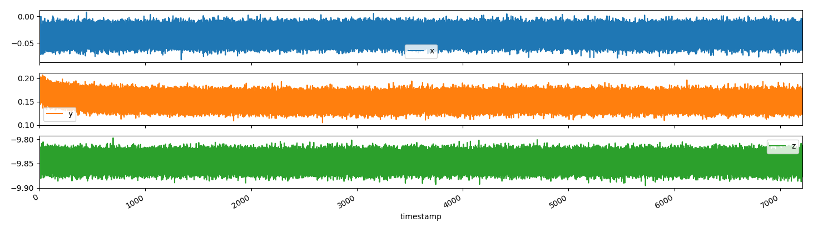
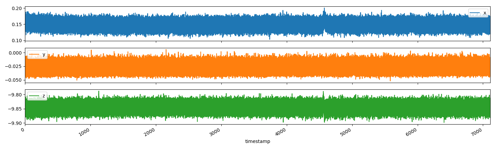
上图:iPhone6静止7200秒的原始加速计数值随时间的变化曲线。
下图:iPad Pro静止7200秒的原始加速计数值随时间的变化曲线。
数据统计信息如下：
# iPhone6 加速计统计信息 x y z mean -0.035517 0.151579 -9.846777 std 0.008939 0.009675 0.009832 min -0.081281 0.105231 -9.895323 25% -0.041464 0.145048 -9.853410 50% -0.035476 0.151335 -9.846823 75% -0.029489 0.157772 -9.840087 max 0.007484 0.206870 -9.797127 # iPad 测量值统计信息 x y z mean 0.148356 -0.027715 -9.844957 std 0.009364 0.005995 0.011061 min 0.102986 -0.051942 -9.898466 25% 0.142055 -0.031884 -9.852362 50% 0.148342 -0.027992 -9.844877 75% 0.154628 -0.023801 -9.837543 max 0.200284 0.005688 -9.787696
对比图像及统计信息，可以发现在静止状态下，iPhone6与iPad Pro的各个轴的测量值受环境噪声影响变化的范围为$\pm 0.05m/s^2$，二者的稳定性能都较好，下图展示使用小波滤波去除高频噪声后的数值图。从滤波后的图中，可以看出对于iPhone6，在720000末尾时刻附近，加速计度数受到了外部较大的扰动，会对我们在进行Allan Variance分析时造成影响；对于iPad Pro设备，在470000时刻附近，设备收到了小幅扰动，也会对我们进行Allan Variance分析造成影响。
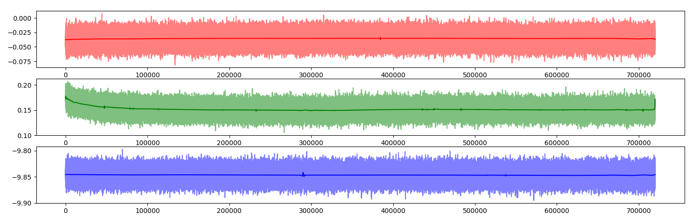
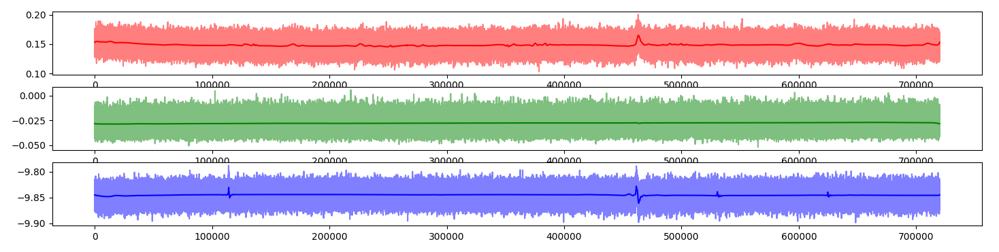
上图:iPhone 6加速计测量值滤波。下图:iPad Pro加速计测量值滤波。
陀螺仪
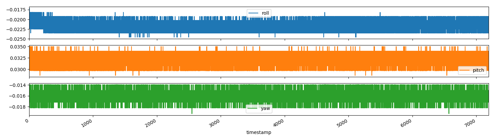
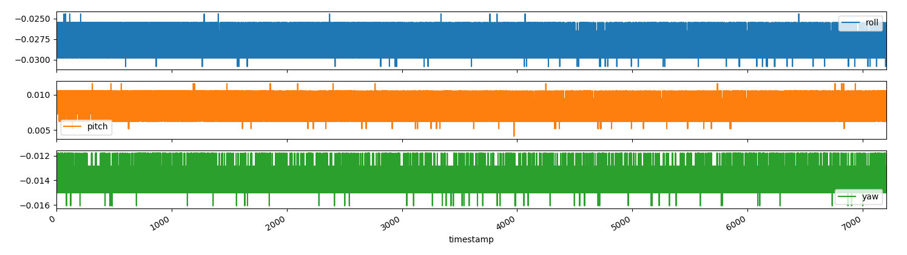
上图:iPhone 6静止7200秒的原始陀螺仪数值随时间的变化曲线。
下图:iPad Pro静止7200秒的原始陀螺仪数值随时间的变化曲线。
统计信息如下：
#iPhone6 roll pitch yaw mean -0.021478 0.032021 -0.016064 std 0.000730 0.000733 0.000625 min -0.024588 0.028623 -0.019294 25% -0.022445 0.031809 -0.016094 50% -0.021383 0.031813 -0.016089 75% -0.021382 0.032872 -0.016085 max -0.017120 0.035008 -0.013947 #iPad roll pitch yaw mean -0.027756 0.008330 -0.013746 std 0.000732 0.000737 0.000564 min -0.030833 0.004116 -0.016073 25% -0.028682 0.008391 -0.013931 50% -0.027622 0.008397 -0.013928 75% -0.027616 0.008404 -0.013922 max -0.024425 0.011610 -0.011783
类似加速计，采用小波滤波去除噪声后的陀螺仪测量值变化情况如下图。
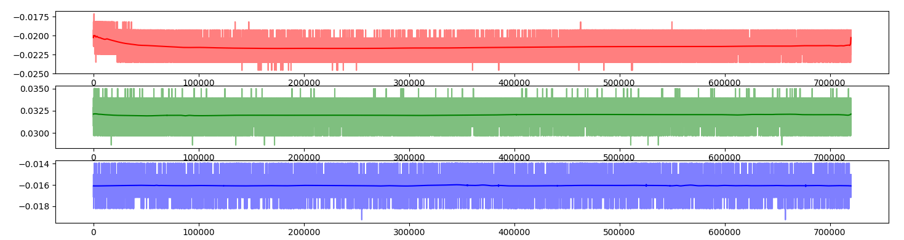
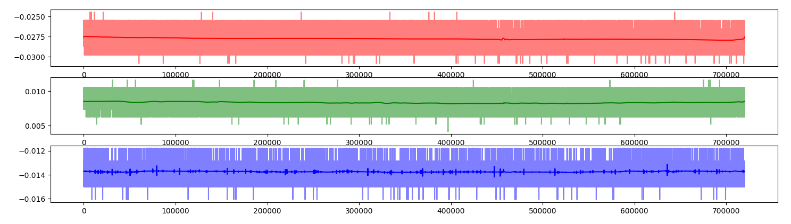
Allan Variance分析
对于一个给定的平均时间t, Allan Variance的计算过程如下：
- 将所有时刻的数据按照时间长度t划分。
- 在每一份上计算平均值${a(t)_1, a(t)_2, \cdots , a(t)_n}$，其中n为份数。
- Allan Variance
$$AVAR(t) = \frac{1}{2(n-1)}\sum_{i}(a(t)_{i+1}-a(t)_i)^2$$
确定噪声特性时，Allan Deviation由下式给定:
$$AD(t)=\sqrt{AVAR(t)}$$
使用log-log来绘制随平均时间t的变化。
标准的Allan Variance图如下图所示：
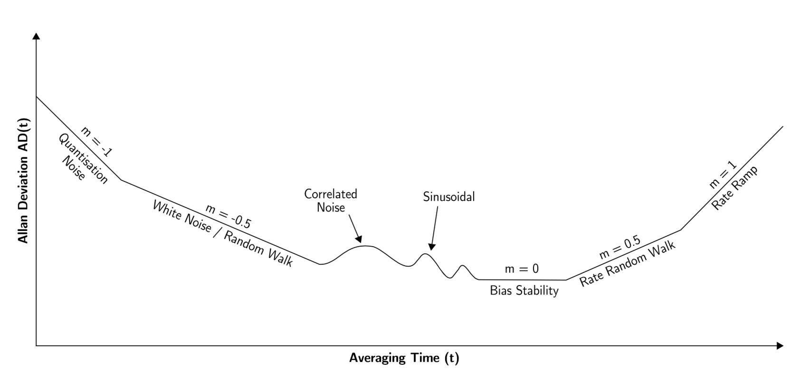
| Allan 标准差 | 系数 | 双对数曲线斜率 |
|---|---|---|
| $AD(t) = \sqrt 3 Q/t$ | 量化噪声系数Quantization Noise | -1 |
| $AD(t) = N / \sqrt t $ | 角速度随机游走/白噪声 Random Walk/White Noise | -0.5 |
| $AD(t) = 0.664B $ | 零偏不稳定性Bias InStability, Flicker | 0 |
| $AD(t) = Wt/\sqrt 3 $ | 速率随机游走系数Rate Random Walk | 0.5 |
| $AD(t) = Rt/\sqrt 2 $ | 速率斜坡系数Rate Ramp | 1 |
各项噪声相互独立，则Allan方差为：
$$AVAR(t) = \frac{3Q^2}{t^2} + \frac{N^2}{t} + (0.6648B)^2 + \frac{W^2}{3}t + \frac{R^2}{2}t^2$$
可以通过拟合上式求解出各项噪声系数。
下面对iPhone6和iPad Pro设备进行Allan方差分析，需要提及的是，在上述分析中，测得iPhone6在720000时刻末尾受到了外部较大的扰动，会影响分析，故而选定[0:719000]时刻之间的数据进行分析。
加速计Allan Variance
图中虚线表示实际数据产生的曲线，实线表示基于实际数据拟使用最小二乘拟合各项系数。
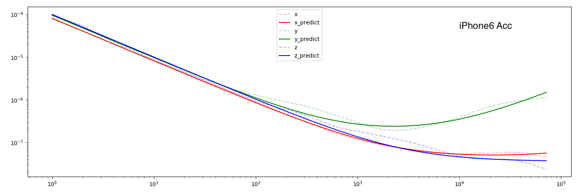
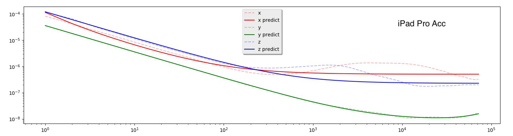
| iPhone 6参数 | Bias Instability | 加速度随机游走 |
|---|---|---|
| x轴 | 0.00031339118089950978 $m/s^2$ | 0.00900734500775285038 $m/s^2/\sqrt{s}$ |
| y轴 | 0.00059266534623396135 $m/s^2$ | 0.00978029252483184584 $m/s^2/\sqrt{s}$ |
| z轴 | 0.00028523714305156200 $m/s^2$ | 0.00999934941654948527 $m/s^2/\sqrt{s}$ |
| iPad Pro参数 | Bias Instability | 加速度随机游走 |
|---|---|---|
| x轴 | 0.00106918429453465962 $m/s^2$ | 0.00745781762060129024 $m/s^2/\sqrt{s}$ |
| y轴 | 0.00014150320967146692 $m/s^2$ | 0.00596410135694045752 $m/s^2/\sqrt{s}$ |
| z轴 | 0.00071630683170711572 $m/s^2$ | 0.01094867249117151102 $m/s^2/\sqrt{s}$ |
陀螺仪Allan Variance
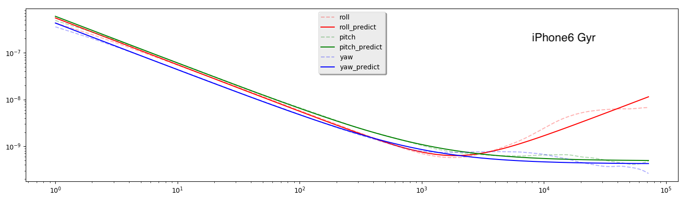
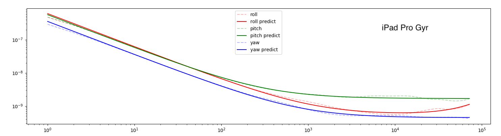
| iPhone 6参数 | Bias Instability | 角度随机游走 |
|---|---|---|
| roll轴 | 0.00000958949814246141 $°/s$ | 0.00074476637902596220 $°/\sqrt {s}$ |
| pitch轴 | 0.00003329700350509466 $°/s$ | 0.00077487980339896868 $°/\sqrt {s}$ |
| yaw轴 | 0.00003092355420404677 $°/s$ | 0.00065633846881467763 $°/\sqrt {s}$ |
| iPad Pro参数 | Bias Instability | 角度随机游走 |
|---|---|---|
| roll轴 | 0.00003481153129870388 $°/s$ | 0.00078542607142304433 $°/\sqrt {s}$ |
| pitch轴 | 0.00006181899789760461 $°/s$ | 0.00075425826751018582 $°/\sqrt {s}$ |
| yaw轴 | 0.00003160778722050383 $°/s$ | 0.00059731859848418528 $°/\sqrt {s}$ |
结果
iPad Pro和iPhone6使用的IMU型号相同，性能相差不大。从加速计数据来看，iPad Pro和iPhone6受白噪声影响的加速度随机游走大致相同，不过bias稳定性方面，iPad Pro性能比iPhone6要差一些，问题出现在数据获取阶段，在使用小波变换后得到的iPad Pro 加速计x轴和z轴的变化情况可以看出，在大约470000时刻出现了一次向上的波动，也即设备受到了外部扰动，导致了设备不是出于静止状态。相对地，在470000时刻，陀螺仪测量的扰动不明显，iPhone6与iPad Pro的Allan Variance分析表明二者的性能十分接近，Bias Instability大致相同。
TODO
1.采集数十小时的设备静止数据进行分析。
采集8.5小时数据绘制的Allan Variance图。
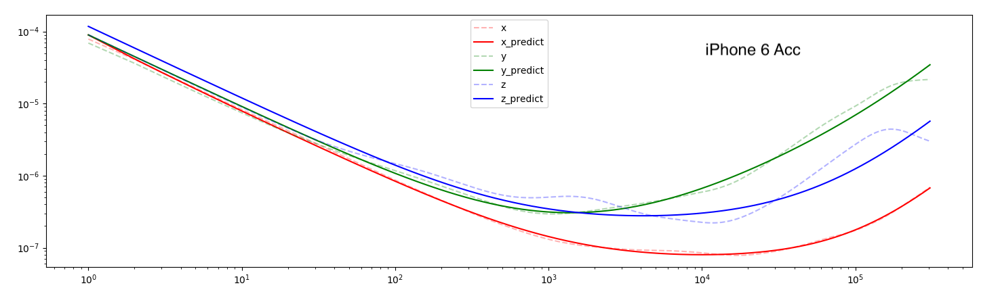
| 参数 | quantization | white | flicker | walk | ramp |
|---|---|---|---|---|---|
| x轴 | 2.036605913865e-03 | 8.787034448905e-03 | 3.842003262693e-04 | 1.434705682799e-06 | 2.920101145273e-09 |
| y轴 | 0.000000000000e+00 | 9.467511485760e-03 | 6.351823845897e-04 | 1.172745998124e-05 | 2.082541807133e-08 |
| z轴 | 0.000000000000e+00 | 1.085228494629e-02 | 7.092289945368e-04 | 4.422579509429e-06 | 8.614174995923e-09 |
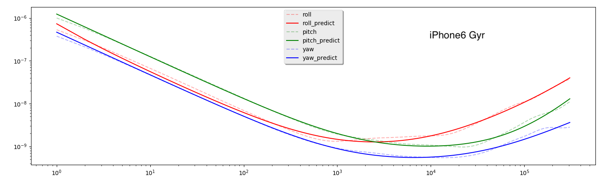
| 参数 | quantization | white | flicker | walk | ramp |
|---|---|---|---|---|---|
| roll轴 | 2.591604522717e-04 | 7.280523999135e-04 | 4.384859460983e-05 | 5.046802826819e-07 | 5.263176166678e-10 |
| pitch轴 | 0.000000000000e+00 | 1.111262674864e-03 | 4.131491400990e-05 | 1.971495693847e-07 | 4.176582313217e-10 |
| yaw轴 | 0.000000000000e+00 | 6.824313983321e-04 | 3.052670874270e-05 | 1.772773607659e-07 | 0.000000000000e+00 |
2.基于加速计和陀螺仪数据实现简单的惯性导航系统。
2018-08-16 15:39:24